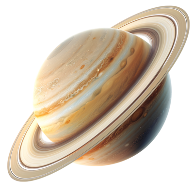

Sobre o Saturno
Saturno – O Senhor dos Anéis
Saturno é famoso por seus anéis espetaculares, compostos por gelo e poeira. Embora não seja o único planeta com anéis, os de Saturno são os mais impressionantes. Ele também é um gigante gasoso formado por hidrogênio e hélio. Entre suas luas, Titã se destaca por ter uma atmosfera densa e lagos de metano líquido, despertando interesse científico sobre a possibilidade de formas de vida alternativas.
Curiosudades
-
Flutuaria na água:
Saturno é menos denso que a água; se houvesse um oceano gigante, ele boiaria. -
Anéis jovens:
Estudos sugerem que seus anéis podem ter apenas 100 milhões de anos
– mais jovens que os dinossauros. -
Lua misteriosa:
Titã, a maior lua de Saturno, tem lagos de metano líquido e chuva “alienígena”.